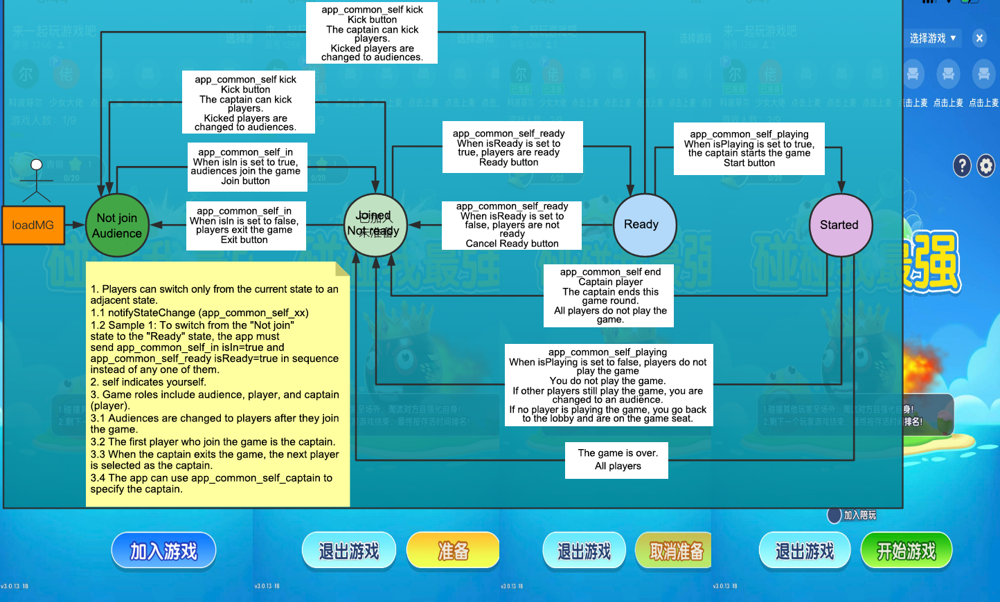

#
General state
Tips
- The SDK ensures that the states are sent from the app to the game serially.
- After a state notification, the SDK caches the latest data value based on the state value for the MG to proactively obtain it at anytime.
- The app only needs to notify a user of their own state, and the MG will broadcast and synchronize it to all peer users.
- The
ISudFSTAPP notifyStateChange(state, dataJson)API is used.
[TOC]
State transduction description

0. Testing
- state
app_common_hello_fsm
- data
{
"msg": "Hello FSM from APP!"
}
- Description
This state is used for testing.
1. Joining
- Earliest version: V1.1.30.xx
- state
app_common_self_in
- data
{
"isIn": true, // Indicates whether a user joins or exits a game. Valid values: true: join the game; false: exit the game.
"seatIndex": 1, // Seat number of the user in the game. The value can be -1 (random seat) or ranges from 0 to the total number of seats. The default value is -1.
"isSeatRandom": true, // Indicates whether to allocate a random seat to the user when the seat with the specified number has been occupied. Valid values: true: allocate a random seat; false: not allocate a random seat.
"teamId":1 // Team ID. If the game does not allow users to be grouped into different teams, set this parameter to 1. Otherwise, set this parameter to 1 or 2 (two teams).
}
- Description
Whether a user joins/exits a game.
Correct processes:
1. isIn=true: Join the game => Get ready => Start the game
2. isIn=false: End the game => Cancel the ready state => Exit the game
2. Ready
- Earliest version: V1.1.30.xx
- state
app_common_self_ready
- data
{
"isReady": true // Indicates whether a user gets ready for a game. Valid values: true: get ready; false: cancel the ready state.
}
- Description
Whether a user gets ready for a game or cancels the ready state.
3. Gaming
- Earliest version: V1.1.30.xx
- state
app_common_self_playing
- data
{
"isPlaying": true, // Indicates whether a user starts playing a game. Valid values: true: the user starts playing; false: the user ends playing.
"reportGameInfoExtras": "Transparently passed parameters." // This parameter is of the string type. The HTTPS service calls back the report_game_info parameter. The maximum value length is 1024 bytes. A longer value will be truncated. (This parameter is available since February 11, 2022.)
}
- Description
A user's gaming state. If the user is in the game, you are advised to:
a. Empty the central area of the screen:
Disable the full-screen gift effect.
b. For games that require frequent operations with spaceMax set to true, downsize the native UI and spare as much operation space for the game as possible:
Downsize the public screen.
Downsize the voice chat area.
If the user exits the game, restore the space allocation.
4. Captain
- Earliest version: V1.1.30.xx
- state
app_common_self_captain
- data
{
"curCaptainUID":"" // UID of the captain. This parameter is required.
}
- Description
Whether a user is the captain who is authorized to start the game.
5. Kicking a player
- Earliest version: V1.1.30.xx
- state
app_common_self_kick
- data
{
"kickedUID": "uid" // UID of the player being kicked.
}
- Description
A user who is the captain kicks another player.
Only the captain is authorized to kick other players.
6. Ending a game
- Earliest version: V1.1.30.xx
- state
app_common_self_end
- data
{}
- Description
A user who is the captain ends the current round of game or the game ends in advance as all players exit the game.
7. Room (deprecated since V1.1.30.xx)
- Please use
app_common_self_ininstead. - state
app_common_self_room
- data
{
"isIn": true // Indicates whether a user is in a room. Valid values: true: in a room; false: not in a room.
}
- Description
Whether a user is in a room. You are advised to:
Send a notification when the user enters or leaves the room.
- Description
Whether a user exits the game.
8. Voice chat (depreated since V1.1.30.xx)
- Please use
app_common_self_ininstead. - state
app_common_self_seat
- data
{
"lastSeat": -1, // Previous voice chat seat No. of a user. The value starts from 0. If the user does not start a voice chat before, set this parameter to -1.
"currentSeat": 0 // Current voice chat seat No. of a user. The value starts from 0. If the user does not start a voice chat currently, set this parameter to -1.
}
- Description
Voice chat state of a user. You are advised to:
Send a notification when the user enters the room.
Send a notification each time the user's voice chat state changes, that is, when the user starts a voice chat, ends a voice chat, or changes the voice chat seat.
9. Microphone
- state
app_common_self_microphone
- data
{
"isOn": true, // Indicates whether a user turns on or off the microphone. Valid values: true: the microphone is turned on; false: the microphone is turned off.
"isDisabled": false // Indicates whether a user's voice chat function is disabled. Valid values: true: the voice chat function is disabled; false: the voice chat function is enabled.
}
- Description
The microphone state of a user. You are advised to:
Send a notification when the user enters the room.
Send a notification each time the user's microphone state changes, that is, when the user turns on or off the microphone and when the user's voice chat function is disabled or enabled.
10. Keyword hitting
- state
app_common_self_text_hit
- data
{
"isHit": true, // Indicates whether a keyword is hit. Valid values: true: a keyword is hit; false: no keyword is hit.
"keyWord": "Key", // Keyword.
"text": "This is key" // Chat message.
}
- Description
Whether a keyword is hit in a user's chat message. You are advised to:
Use exact match for keywords.
If a chat message hits a keyword, persist the keyword hitting state for subsequent chat messages.
Restore the keyword hitting state when the keyword in the game is updated.
11. Background music (added on December 27, 2021)
- state
app_common_open_bg_music
- data
{
"isOpen": true // Indicates whether a user turns on or off the background music. Valid values: true: the background music is turned on; false: the background music is turned off.
}
- Description
A user turns on or off the background music.
12. Sound effect (added on December 27, 2021)
- state
app_common_open_sound
- data
{
"isOpen": true // Indicates whether a user turns on or off the sound effect. Valid values: true: the sound effect is turned on; false: the sound effect is turned off.
}
- Description
A user turns on or off the sound effect.
13. Vibration effect (added on December 27, 2021)
- state
app_common_open_vibrate
- data
{
"isOpen": true // Indicates whether a user turns on or off the vibration effect. Valid values: true: the vibration effect is turned on; false: the vibration effect is turned off.
}
- Description
A user turns on or off the vibration effect.
14. Volume level (added on December 31, 2021 and currently supported by Pong)
- state
app_common_game_sound_volume
- data
{
"volume": 100 // Volume level. The value ranges from 0 to 100.
}
- Description
A user sets the volume level for a game.